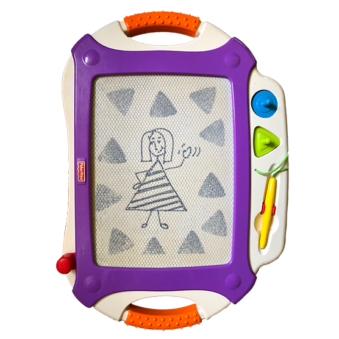

"Hi! I'm Madeleine."
Narrator: She waves enthusiastically
I've always loved creating! As a kid driving back and forth all the time across Texas - note: Texas is huge, i.e. lots of driving! - my Magna Doodle kept me sane. As I grew up, the Magna Doodle was upgraded
to oil paints on canvas, then Photoshop, then Tilt Brush, then Figma, but my pure joy in bringing visuals to life never changed. (Magna Doodle, I still love you.) That said, ‘art’ or ‘design’ were never introduced to me as careers.
Luckily, this worked out in my favor… eventually. By the time I set my sights on UX Design, I got to roll more than just my love of design into a career. I found that UX Design combined my passion for psychology, learning and teaching
languages, exploring technology, and a pursuit of efficiency.

My mom claims she never once had to ask me to do my homework because I was so self-motivated. My test scores earned me financial aid to attend a swanky high school where I met friends with whom I’m still close,
but my drive became more about grades than exploring what interested me. In college, I loved my studio art classes as well as the psychology classes I took. I even assisted in an evolutionary biology
psych lab (I have great stories here), but family and friends convinced me that road led to poverty 😬 . Thank goodness this detour ended up pointing me in the direction of Teach for America. More on that shortly.
My Public Relations degree taught me how to write and for that I will always be grateful because it was a hard-won
lesson and it has proved important in every profession. However, my PR internships and informational interviews failed
to inspire me. Luckily, in came a Teach for America recruiter, which changed my life.
In Teach for America (TFA), a two-year AmeriCorps program aimed at non-education majors with strong achievements in college, I learned I could survive anything, including being a teacher on the first day of preK, which often
resembles a war zone (no really, this is only a slight exaggeration), all while speaking my second language. I had never been around kids so small, let alone been in charge of 22 lives, and that first week was the most challenging week of my life. At each new job,
I’ve maintained calm under pressure and there’s no doubt it’s in large part due to the resilience I learned here. And, yes, I grew to love those little people!
The second thing I learned was how to ‘backwards plan,’ which was how I wrote an entire curriculum and maintained high standards for my students when the district lacked resources. Backwards planning is setting goals, working backward to create smaller goals and tasks that will lead to the main goals,
and measuring students’ progress to make adjustments along the way. This technique is key to any project, and aligns to my work now as a designer in user stories, acceptance criteria, and the iterative process.
Hollywood sans glamour: Me proving to my mom that I stored up water in the bathtub during a series of rather alarming earthquakes on July 4th. What an Independence Day!
Finally, TFA stressed the “eternal student” mindset, or “growth mindset,” and cemented this lesson in monthly learning seminars where I was surrounded by some of the brightest people I’ve ever met while we learned about new technology and research and received constructive criticism. Seeing new ways to
work smarter and not harder and the message that you can learn and adapt at any age is something I took with me that I think about daily as a designer.
I decided after TFA to take a big swing (making up for my pragmatic college approach) and I moved out of state for the first time. I arrived in Los Angeles, hoping to produce shows like those that had inspired me as I grew up; shows with strong female leads like
“Veronica Mars,” “30 Rock,” and “Parks and Rec.” Despite people telling me it was impossible with my lack of entertainment experience, I managed to get a gig as a production assistant and worked my way up to TV Development.
Hollywood sans glamour: Me proving to my mom that I stored up water in the bathtub during a series of rather alarming earthquakes on July 4th. What an Independence Day!
That’s when I had the epiphany that I was more fulfilled during the day creating Google Sheets hacks, researching trends, and creating assets in Photoshop than I was reading TV scripts. Again, my brain was steering back towards design and tech. This time, I took the hint.
Finally...
I told my friend that evening about my epiphany, and what I wanted from a career: a chance to use my natural talent for design, technology, research, and interpersonal communication. I thank my lucky stars that my friend happened to have just caught up with her friend in UX Design. “Oh, I actually know someone who does that!” she said. 🤯 I scheduled my first informational interview with the seasoned designer (shout out to Andrea!), and soon enrolled in my first UX class. I haven’t looked back since.
My dog salutes you for reaching the end of this!
Thank you! - Madeleine